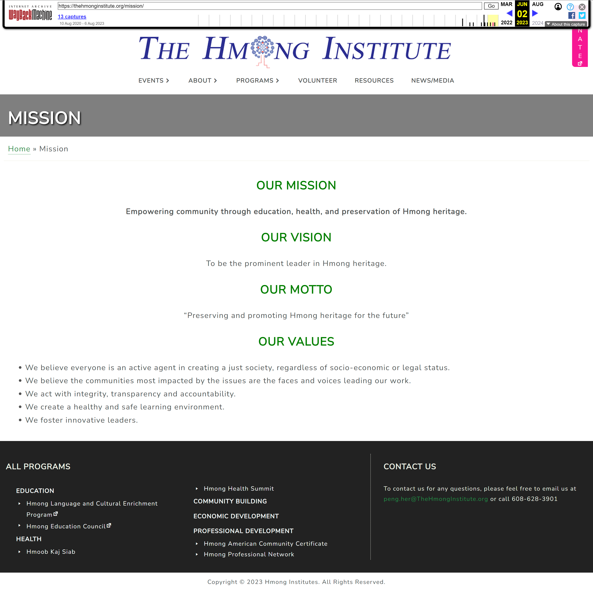
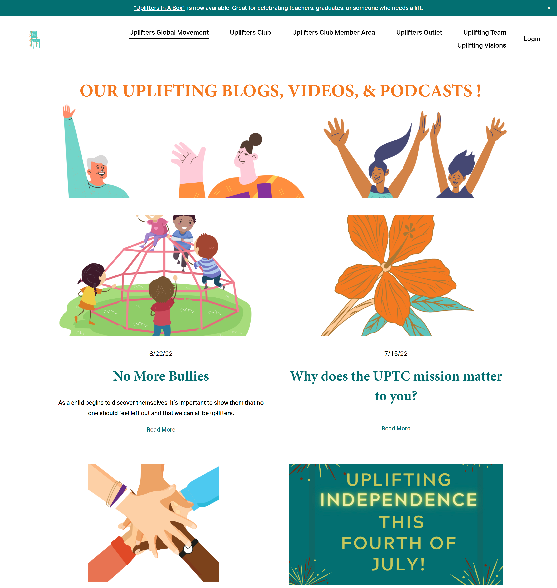
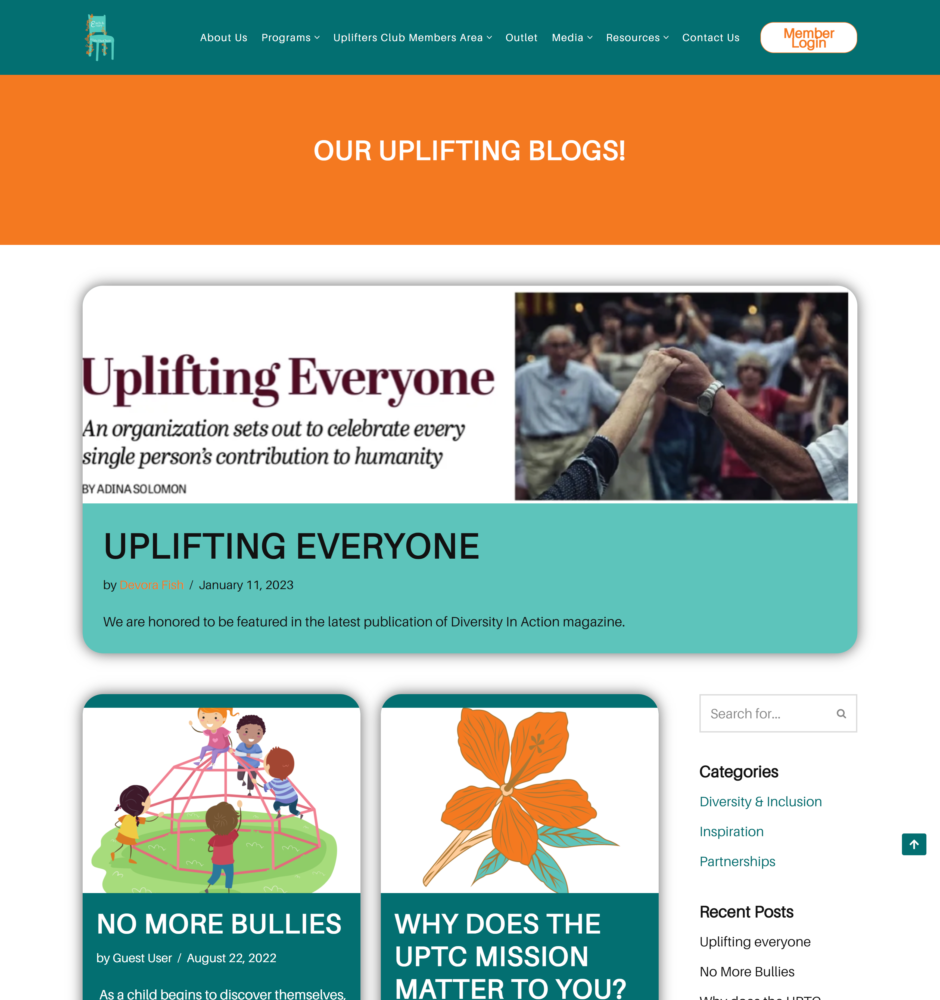
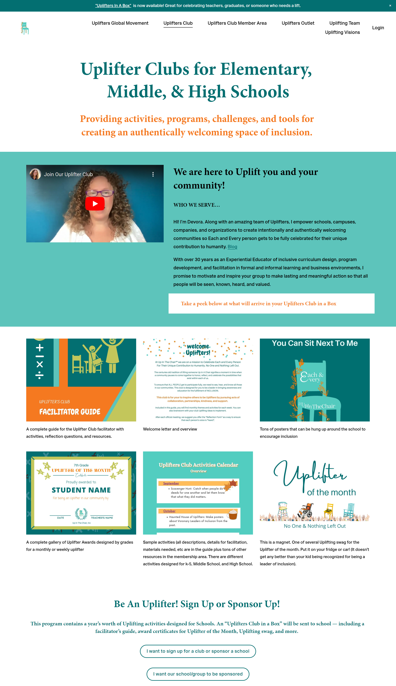
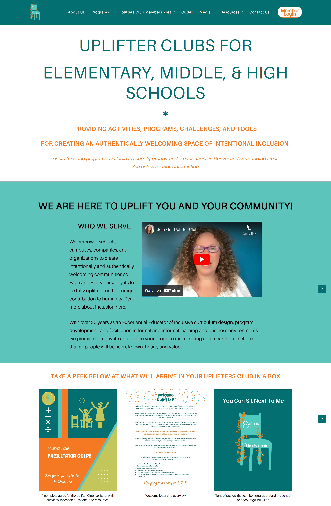

My Projects
Website Redesign - Non-Profit Organization
WordPress | Figma | UI/UX Design
In my position at The Hmong Institute, I was tasked to revamp their website to be more user-friendly and brand-consistent. I worked closely with the executive team to meet the needs of the company and design standards.

Website Redesign - Non-Profit Organization
The Client
The Hmong Institute is a non-profit organization dedicated to serving the local Hmong and underserved communities in Wisconsin through an array of programs and services aimed at fostering health, education, and community engagement. The website was hosted on WordPress and built with Elementor. The previous iteration of the website was left in a state of neglect by former project leaders, desperately in need of a revitalized and cohesive appearance. Our executive team identified the need for enhancements in brand consistency, user-friendliness, the integration of utilities such as a functional events calendar, and streamlined embedded forms for user convenience. While the process of gathering content presented challenges, my commitment, and steadfast leadership ultimately steered this project to fruition, transforming it into a fully functional and vibrant online presence that now serves as a beacon for our community.
The Process
- The planning team consisted of the organization's executives: CEO, COO, President, and Vice President. The planning stage consisted of understanding business standards, website layout using wireframes, and directing customer workflows
- Collaborated with COO to create written content, image placement, business language, and
- Gained experience with Elementor and WordPress plugins such as Events Calendar and YoastSEO.
Landing page
Per request of the executive, I focused on improving the layout of content and brand visibility.
Before

After
About Us page
Before
After

Website Redesign - B-Corp Company
WordPress | Figma | HTML | UI/UX Design
As a web designer intern at Up In The Chair, I worked on importing their old website, hosted on Squarespace, to WordPress and improving their accesbility and consistency on their website. My team consisted of the IT strategist, UI/UX intern, and Business Operations intern. My web design background allowed me to successfully discuss the changes with the manager and complete a variety of tasks to create the new website.
Website Redesign - B-Corp Company
The Client
Up In The Chair inc is a company whose mission is to create welcoming and inclusive communities. They provide programs to promote inclusivity in K-12 schools, high schools, colleges, and companies. The old website, hosted on Squarespace, had many noticeable problems, such as design inconsistencies, broken links, old content, and a lack of understanding of the company's objectives. In addition, the CEO wanted to move the website from Squarespace to WordPress. They formed the Website Team whose sole purpose is to create a modern, accessible website that reflects the company's mission and values.
The Process
- The Website team consisted of the IT strategist, UI/UX intern, and Business Operations intern. The planning stage of the website development involved understanding business standards, creating wireframes, outlining customer workflows, and learning WordPress.
- Importing the website to the new web host was a success and we proceeded to rearrange imported pages using the WordPress page builder plugin, Beaver Builder. As I grew confident with WordPress and Beaver Builder, I was tasked to redesign the Membership page and Blog page for the website.
- When the internship was coming to a close, both interns of the Website Team left while I was offered to stay on as a senior intern to oversee the creative direction and content creation. I stayed on as I am committed to all projects I start on and love to see how my work comes to life.
Blog page
Before
After
Membership page
Before
After
Develop Data-Driven Java Application - Final Project
Java | jUnit | Hibernate | AWS Cognito
My final semester in the IT-Web Software Development program included a final project creating a data-driven Java web application and website. The application was to consume a RESTful web service and have an Object-relational mapping (ORM) framework for all database access. I successfully developed a web application that helps students track their tasks with the ability to create a to-do list and utilize a timer to be conscious of their time management while working on a task.
Data-Driven Java Application
Develop Website - Portfolio Page
HTML | CSS | GitHub | Bootstrap